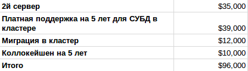
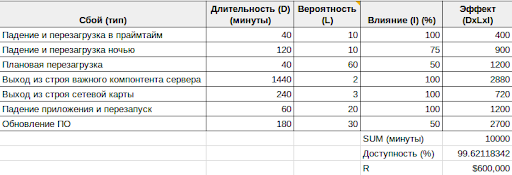
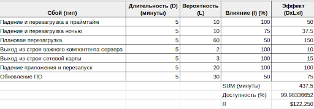

Сбои и восстановление работоспобности систем
Причины простоев
Простои в работе систем и сервисов разделяют на плановые и внеплановые. Под плановыми простоями обычно подразумевается остановка в ранее обозначенном сервисном окне (maintenance window) с целью проведения модернизации оборудования, обновления ПО, обслуживания, миграции данных. Подобную остановку коснемся в данной статье лишь поверхностно. Внеплановые простои, или сбои в работе, происходят по следующим причинам:
-
Отказа в единственном и критически важном узле (single point of failure)
-
Система эксплуатируется вне лимитов предусмотренных во время ее проектирования
-
Программные ошибки
-
Ошибки обслуживающего персонала или пользователей
-
Проблемы с целостностью данных
Stephanie Balaouras приводит [sr] следующую статистику по причинам сбоев:
Классификация сбоев
При анализе и проектировании систем и сервисов прежде всего смотрят на связанные с ними бизнес-процессы. Исходя из важности для организации и условий эксплуатаций последних (сколько выручки они приносят, как влияют на выполнение ключевых функций, под какие ограничения они подпадают и т.п.) и определяют размер ущерба в случае сбоя в зависимости от временных периодов. Вполне очевидно, что это не единственно возможный вид классификации и различные организации, и даже различные подразделения одной организации могут классифицировать сбои по своему преследуя свои цели, например:
-
Классифицировать по региону затронутому сбоем (глобальный, область или штат, район);
-
По причинам отказа (перегрузка, пожар, упавшее дерево, аппаратная ошибка);
-
По компоненту который вызвавший отказ (отказ на сетевом канале, отказ сервера, неисправность UPS и так далее)
-
По важности для ведения бизнеса (не существенный, значимый, важный, критически важный)
Как правило подобные классификации используются при формировании списка от чего организация должна защищаться, планировании как именно это будет происходить, но подобная тема за рамками текущей статьи, поэтому вернемся с классификации по важности для бизнеса.
Опираясь от важности затрагиваемых бизнес-процессов или функций и продолжительности сбоя Клаус Шмидт [hadr] предлагает следующую классификацию:
Категория |
Максимальное время малого сбоя |
Максимальное время крупного сбоя |
Непрерывная работа |
1мин |
2ч |
Бизнес-функция |
10мин |
8ч |
Ключевые бизнес-процессы |
1 рабочий час |
3 дня |
Ведение бизнеса |
1 рабочий день |
1 неделя |
Подобная классификация приведена лишь для наглядности, при разработке плана по восстановлению после отказов и при проектировании системы устойчивой к отказам стоит руководствоваться исключительно фактическими потребностями и регламентами работы организации.
Малые сбои
Малые сбои возникают каждый день на крупных системах даже если организация использует и все планы по поддержанию ведения бизнеса и восстановления после сбоев. Вероятность появления подобных сбоев высока, но связанные с ними последствия и потери достаточно мало, в эту категорию можно отнести отказы со следующими признаками:
-
Сбой произошел в работе изолированного компонента или системы, затронута лишь один бизнес-процесс или один сегмент критической бизнес-функции.
-
Рабочие процессы могут зачастую исполняться в нормальном режиме без прерывания.
-
Важные бизнес-функции продолжают исполняться даже спустя некоторое время после обнаружения отказа
-
Отказ единственного сервиса или системы устраняется в ходе обычной рабочей деятельности или автоматически.
Пример: отказ одного сервера, накопителя, блока питания. Отказ создает проблемы в функционировании организации, но не требует запуска процедур по ручному восстановлению нормального функционирования.
Крупные сбои
Вероятность возникновения крупных сбоев мала, но влияние на ведение бизнеса огромно. Подобные типы сбоев включат в себя:
-
Сбой прерывает нормальное функционирование всех или большинства бизнес-процессов.
-
Сбой из-за того, что все или большинство из систем и сервисов становятся недоступными.
-
Сбой включает в себя выход из строя оборудования, сети организации или ключевых подсетей.
В случае возникновения подобного уровня сбоя в работе организации вам необходимо определить какая часть из плана business continuity / disaster recovery (BC/DR) вам необходимо использовать и какие команды будут ответственны за выполнение работ по восстановлению. Планирование и обработка таких событий будет освещено в последующих статьях по аварийному восстановлению.
Сбои и связанные с ними процессы
Если рассматривать сбои исключительно с точки зрения бизнеса, то нельзя не обратить внимание на тот факт, что любая активность, направленная на предотвращение сбоя или его устранение это работа с рисками и затратами. Меру по предотвращению сбоя можно назвать инвестицией в отказоустойчивость, тогда как восстановление после сбоя есть не что как работа с приемлемыми рисками. Либо неприемлемыми, но тогда бизнес будет существовать до первого инцидента, который приведет к его закрытию.
Оценка рисков (в англоязычной литературе risk assessment) - это отдельная большая тема, которая раскрывается и в управлении проектом, и продуктом, и во время анализа требований, и для составления планов BC/DR. Более подробно, но все же относительно поверхностно она будет рассмотрена в последующих статьях, для более глубокого изучения приведу дополнительные ссылки.
Высокая доступность / High Availability / HA
И так, “высокая доступность” - это решение бизнеса по обеспечению его собственного непрерывного функционирования. Технических трактовок для HA существует большое множество, некоторые из них:
-
Storage Network Industry Association [snia]: The ability of a system to perform its function continuously (without interruption) for a significantly longer period of time than the reliabilities of its individual components would suggest. High availability is most often achieved through failure tolerance. High availability is not an easily quantifiable term. Both the bounds of a system that is called highly available and the degree to which its availability is extraordinary must be clearly understood on a case-by-case basis.
-
DigitalOcean.com: In computing, the term availability is used to describe the period of time when a service is available, as well as the time required by a system to respond to a request made by a user. High availability is a quality of a system or component that assures a high level of operational performance for a given period of time.
-
Klaus Schmidt [hadr]: High availability is the characteristic of a system to protect against or recover from minor outages in a short time frame with largely automated means.
Более детально основы HA, дизайн HA систем и затраты на его обеспечение будут рассмотрены в следующей статье.
Аварийное восстановление / Disaster Recovery / DR
Те сбои, которые было невозможно предотвратить через комплекс мер для HA приводят к тому, что реализация бизнес-процессов сильно замедляется, либо прекращается вовсе (см. Крупные сбои). Под набором планов (крайне желательно, чтобы они были) работ и скрывается “аварийное восстановление” или “business continuity / disaster recovery” (BC/DR). Определение от Klaus Schmidt[hadr]: Disaster recovery is the ability to continue with services in the case of major outages, often with reduced capabilities or performance. Disaster-recovery solutions typically involve manual activities.
Более подробно организационные меры и технические решения для обработки крупных сбоев и восстановление после них рассмотрим в последующих статьях.
Таймлайн
Перед тем как перейти к анализу сбоев, их оценке и планирования их обработки следует определить что именно происходит до, во время и после сбоя, а также несколько самых часто используемых терминов которые используются в этой области. Ниже представлена диаграмма с типичными фазами и последовательностью действий для восстановления.

Maximum tolerable downtime (MTD) или максимальное время простоя - максимальное время которое бизнес может допустить в случае отсутствия или недоступности конкретных бизнес функций. Различные бизнес-функции имеют различный показатели MTD в зависимости от их критичности - чем важнее функция для бизнеса, тем короче должен быть MTD для нее. Простой можно разделить на две фазы: RTO и WRT.
Recovery time objective (RTO) или время доступное на восстановление системы - время, использующееся на восстановление поврежденной инфраструктуры и ресурсов. В этой фазе система запускается, восстанавливаются данные из резервных копий.
Work recovery time (WRT) или время восстановления работы. WRT необходимо декларировать в MTD так как это именно то время, которое необходимо на восстановление работоспособности бизнес-функций, когда происходит устранение целостности данных, синхронизация потоков данных, валидация данных полученных вручную и их добавление к имеющимся наборам данных. Без этой фазы крайне тяжело достичь требований полного восстановления с использованием обычных рабочих процессов без внесения дополнительных для бизнеса риска и без уменьшения его эффективности.
Recovery point objective (RPO) - максимально допустимое количество данных, которые бизнес может позволить потерять. На основе этого показателя утверждаются процедуры проведения транзакций, репликаций, создания резервных копий и их расписание. Так как у разных систем различные требования к RTO и RPO, то при эксплуатации пытаются найти экономический баланс между стоимостью эксплуатации и потерями. Ниже список технологий и подходов, применяемых там:
-
0сек - 10 сек - синхронные репликация или зеркалирование (mirroring)
-
10 сек - несколько минут - асинхронная репликация
-
Несколько минут - несколько часов - периодическая репликация
-
Несколько часов - неделя - резервное копирование
Соответственно:
-
#1, #2 - кластеризация внутри эксплуатируемого контура (production environment) и репликация на запасной контур
-
#3 - ручная миграция на запасной контур
-
#4 - восстановление из резервной копии, естественно вручную
В случае использовании репликации важно знать алгоритм переключения I\O на реплику при недоступности master узла. В случае резервного копирования - время восстановления из резервной копии, это зависит от: объема данных, скорости передачи данных, технологий резервного копирования и их ограничений. Более подробно эти технические нюансы рассмотрим в последующих статьях.
И так система обычно проходит через следующую последовательность состояний прежде чем будет полностью восстановлена:
# |
Фаза |
Защита |
Ограниченные меры (дешевле) |
1 |
Потеря данных (RPO) |
Синхронная репликация на резервный контур (очень дорого, увеличивает время на проведение транзакции) |
Резервный контур разворачиватся из резервных копий. Процесс может занять дни. |
2 |
Аварийное событие и простой |
Автоматический процедура по перенаправлению трафика на резервный контур пока основной контур восстанавливается. На резервный контур должна быть настроена репликация. |
Ручной запуск приложений на втором контуре, дополнительные работы по перенаправлению трафика, прогрева кэшей. |
3 |
Деградация |
Работа на резервном контуре до восстановления основного. Если это единственный контур, то последующий большой сбой приведет к полному простою системы и катастрофическим последствиям. |
Тоже самое |
4 |
Запланированный простой |
Относительно небольшое время простоя для миграции данных из резервного контура на основной перед его запуском в эксплуатацию. |
Тоже самое |
Даже без фактически расчетов не трудно заметить, что в случае наличия зависимости между доступностью системы и дохода бизнеса, например потери выручки, осуществление продаж, потеря потенциальных заказчиков и т.д. Можно изобразить зависимость между затратами на восстановление и то сколько времени тратится на него.
Чем больше времени тратится на восстановление, тем больше потери (и они не линейны), но тем дешевле мероприятия по возобновлению работы так как требуется меньше дополнительных человеко-часов и ресурсов на эти процедуры.
Цена доступности
Вернемся к формуле доступности из первой статьи.
A = MTBF / (MTBF + MTTR)
Видно, что для увеличения доступности нужно либо увеличивать MTBF, либо уменьшать MTTR. Очевидно, что на компоненты склонные к отказам как-то повлиять тяжело, они просто падают с некоторой вероятностью, соответственно легче сфокусироваться на MTTR. Таким образом если проблемными частями системы являются отдельные компоненты, то самым простым способом существенно увеличить доступность системы - дублировать их с автоматическим переключением нагрузки на резервные или изначально избыточные части: зеркалирование накопителей, настройка аварийного переключения (failover) для кластеров. Таким образом потенциальные простои системы могут быть уменьшены с дней до считанных минут.
Пример. Минута простоя обходится в $100 (достаточно низкое значение). Уменьшаем простой вследствии сбоя с 5 часов до 20 минут, тогда это позволит не потерять $28000 (280 мин * $100). Если подобный сбой происходит раз в два месяца, то реализация подобных вложений позволит не потерять уже $168000 за год. Вполне очевидно, что это стоит того чтобы вложить в увеличение надежности $20000 или $50000, особенно если время жизни такой системы будет больше чем 1 год.
Время добавить немного арифметики в повествование для того, чтобы иметь представление как вложения в нее повлияют на бизнес. Для примера возьмем расчет экономии между до и после затрат на увеличение надежности. Экономия (\$S\$) будет разницей между риском "до" (\$R_B\$) и риском "после" (\$R_A\$), т.е.: \$S=R_B-R_A\$. Затраты на реализацию - \$C_M\$. Таким образом можно посчитать ROI в процентах:
\$ROI = S/C_M\$
Очевидно и просто, но расчет рисков все-таки несколько более объемный. В рисках три показателя: влияние (impact) на систему, продолжительность (duration) сбоя и вероятность (likelihood).
Влияние. Процент пользователей, которые были охвачены сбоем. Если это запланированная перезагрузка сервера в 3 утра на обслуживание, то это может быть 10%. Если это отказ ключевого сервера БД в середине рабочего дня - 100%.
Продолжительность. Продолжительность сбоя во времени когда пользователи не могут воспользоваться некоторой функцией или ресурс недоступен. Обычно измеряется в минутах.
Вероятность. Количество раз, когда компонент может приводить к сбою за ожидаемое время эксплуатации системы. Например, если отказ одного из компонентов случается раз в месяц, то за пять лет вероятно он откажет 60 раз. Редкие события могут и не случаться пока система эксплуатации, например аппаратный роутер будет работать 5 лет без сбоев, тогда вероятность сбоя можно оценить в 0.01 или меньше. Эти показатели вероятностные и выставляются на основе прогнозов и на основе опыта людей, которые их уже использовали.
И так, каждое событие (\$E\$) будет состоять из влияния (\$I\$), продолжительности (\$D\$) и вероятности (\$L\$).
\$E = I \cdot D \cdot L\$
Соответственно состояние “до” \$E_{Bx}\$ компонента x и “после” \$E_{Ax}\$. Другой важный фактор - стоимость простоя (\$C_D\$), выразим его в долларах за минуту. Большинство компаний не имеют информации о том сколько стоит время простоя, аналитические и консалтинговые компании (такие как IDC или Gartner) публикуют среднее значение по отрасли, а не по каким-то выбранным реализациям. И так, общая формула риска для n компонентов до:
\$R_B=C_D \cdot \sum\_{x=1}^n E_{Bx} \$
Риск после:
\$R_A=C_M+(C_D \cdot \sum\_{x=1}^n E_{Ax}) \$
Где \$С_M\$ - цена имплементации.
Нужно отметить тот факт, что сам по себе показатель стоимости простоя нелинеен для большинства систем. В случае нескольких секунд или минут он может зачастую может остаться без реакции на него из-за использования retry и backpropagation техник или вызовет лишь незначительное неудобство для пользователя. Тогда как простой в час и выше может принести ощутимый ущерб бизнесу. Этот параметр всегда нужно рассматривать исключительно с точки зрения конкретного бизнеса и его модели.
Пример: Повышение надежности за счет создания кластера из двух узлов.
Средних размеров сервисная компания использует РСУБД и от доступности которой зависит большинство бизнес-функций компаний по получению и обработке заказов. Ожидаемый срок эксплуатации системы - 5 лет, цена простоя $60 за минуту или $3600 в час. Чтобы использовать РСУБД в кластере, нужно:
-
Купить сервер
-
Поставить второй сервер на колокейшн
-
Установить и настроить кластерно ПО на оба хоста для репликации и * переключения ролей в кластере
-
Обновить ПО использующее этот кластер
-
Заключить договор на поддержку кластера (платная поддержка)
Цена имплементации (\$C_M\$):

Риски до имплементации:

Риски после:

Итого экономия за 5 лет от повышения доступности составляет:
\$S=R_B-R_A-C_M\$
$600000-$122250-$96000=$477750
Детальная калькуляция с описанием допущений доступна в Example-01: Risk calculation (Google Sheet).
Арифметика доступности: итоги
Рассмотренный пример, пусть и в достаточно упрощенной форме, демонстрирует общий подход как на основе достаточно простых калькуляций сделать прогноз по окупаемости вложений в доступность сервиса. Как уже было описано ранее, увеличение доступности есть увеличение MTBF, либо уменьшение MTTR и второй вариант является, чаще всего, более дешевым из-за улучшения рабочих процедур, использования лучших практик, а не за счет покупки крайне дорогого оборудования, которое все же будет иметь вероятность возникновения сбоя из-за каких-либо дефектов, ошибок так и в силу внешних факторов.
Таким образом можно схематически отобразить зависимость между затратами и увеличением доступности:

На изображении также представлен “стек” практик, которые следует последовательно (снизу вверх) вводить для достижения требуемого уровня надежности системы. Именно за счет последовательности в управлении надежности эта самая надежность и достигается, так как без нижележащего уровня высокий уровень будет иметь не так много смысла и даже его использование может быть осложнено или невозможно в принципе.
Более подробно эти практики рассмотрим в последующих статьях.
Ссылки
-
[sr] 3 Steps to IT Resilience with Forrester - https://vimeo.com/182883763
-
[hadr] High Availability and Disaster Recovery: Concepts, Design, Implementation, Klaus Schmidt (2006)
-
[snia] SNIA: Dictionary - https://www.snia.org/education/dictionary
-
[bcdr] Business Continuity and Disaster Recovery Plan for Information Security (Heng, 1996)
-
[bcp] BCP - https://en.wikipedia.org/wiki/Business_continuity_planning
Alexander Salimonov
Engineering Manager
Distributed and data-intensive sytems, databases, data processing, cloud computing.